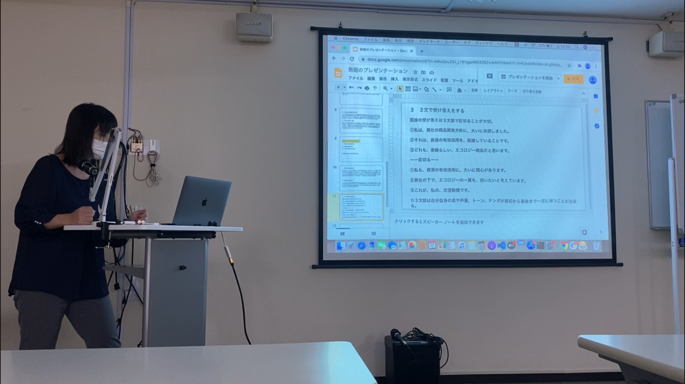
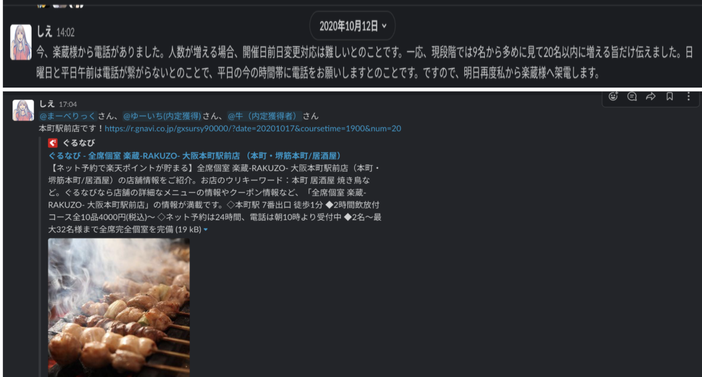
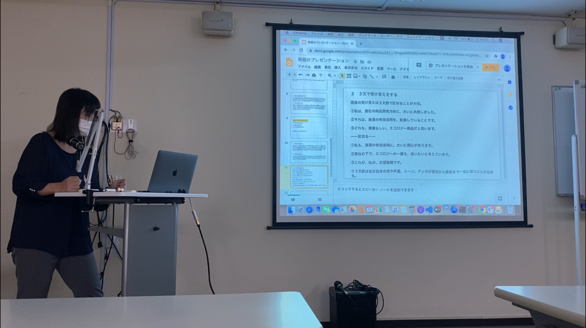
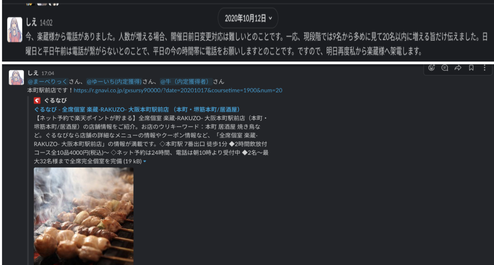

花形祥絵 Portfolio Site
about me
パーソナル情報
1995年10月12日生まれ / 25歳
経歴
- ・2019年3月 ： 東成学園昭和音楽大学 器楽科 ピアノ音楽コース 卒業
-
・2019年4月 ： 株式会社マーキュリー大阪支店 就職
「感動エージェント」という企業理念に惹かれ入社を決意しました。
入社後1年目から営業２部営業1部に配属されました。
ヤマダ電機テックランド京都吉祥院店にて黒物販売を担当しました。
最初の2ヶ月間は研修期間であった為、店舗の組織や商品案内が出来るように品出し業務やレジ打ち業務、ポイントカード入会促進業務に従事しておりました。
ポイントカード入会促進業務では、1週間に10％未満だった入会率が1週間に10％以上にまで伸びました。
また、お客様に商品の場所を案内するうちに「親切に有難う。」と言われることが多くなり、常連のお客様と世間話が出来るようにまでなりました。これにより私は接客の根底にある、初対面の方ともすぐに打ち解けられるコミュニケーション能力が身につきました。
ポイントカード入会率をあげる為に、先輩の接客を観察したり、休憩時間に積極的に質問しにいくということを実践し続けました。
先輩社員からその努力を認められ、「花形さん頑張ってるやん！この調子やで！」と声をかけられ、先輩との距離もグッと近くなりました。それにより、2ヶ月間の勤務でしたが、わからないことがあったらすぐ聞ける環境を自ら構築することが出来ました。
常に頭を使い改善策を考える癖や人の為に仕事をするという責任感と、短期間のうちに人とすぐ打ち解けられ、見方を作るという柔軟な人間関係構築力がこの時期に身につきました。
- ・2019年8月 ： 株式会社マーキュリー大阪支店 営業1部営業1部 異動
-
・2020年12月 ： 株式会社マーキュリー大阪支店 営業1部営業2部 異動
ソフトバンク株式会社 TOP GUNという携帯促進販売営業に配属になりました。
私の住居地が京都左京区だった為、毎日平均2時間以上かけて、兵庫エリアの店舗やイベントを回っておりました。毎日違う代理店、イベントへ入店しておりました。出張も1ヶ月に10日以上と多い勤務となりました。
兵庫県内のソフトバンク代理店や携帯促進販売イベントでの売り上げに貢献する為に、多くの戦略実践をしました。
キャッチからクローズに持っていく流れの改善、お客様の不利にならない料金や機種の提案等です。そして、代理店やソフトバンクのファンを増やす行動です。
お客様来店数が少ない店舗のファンを増え、個人成績としては配属から1ヶ月目は1に1件だった販売獲得成績が3ヶ月で1週間に5台までに増やすことが出来ました。
本当に多くの変化を求め、前向きに行動してきました。そして、毎日PDCAサイクルに取り組んできました。
個人成績や毎日変わる人間関係という課題がありましたが、自分に求められていることは何か？と毎日問い続け、販売獲得数を上げる為に毎日必死で業務に取り組んできました。
先輩社員やSVに営業トークノートを毎週提出し、フィードバックを自ら貰いに行きました。そして、販売獲得数が多い方のクローズを観察して真似をしました。自分の興味づけ音声を録音し、先輩社員やSVとの違いを比較しました。
その結果、お客様から「花形さんから購入して本当によかった！有難う！。」と言って頂けました。そして、人のお客様からお菓子の差し入れも頂きました。また、入店店舗での信頼も生まれ、店長から獲得に繋がりそうな案件を任されるようになりました。SVからも「この調子で頑張って！No.1になれるように育てたい！」とお褒めの言葉も貰えるようになりました。
この業務経験から、PDCAサイクルの大切さや高いコミュニケーションを要する営業接客能力そして、初対面での人間関係構築能力の向上を図ることが出来ました。 お客様に最善を尽くす、それを通して人の笑顔を作りに行くということに心が震え、社会や人の役に立てることに最高の喜びを感じます。 - ・2021年4月 ： 株式会社マーキュリー大阪支店 営業1部営業2課 異動
- ・現在正社員として働きながら転職活動中
受電業務、架電業務、事務処理業務を経験しました。
10人ぐらいのチームに分かれ、AHT（通話時間、保留時間、後処理時間）を成績指数にお客様対応NO.1を目指して業務に励みました。
配属当時50人中40位だったAHT成績が6ヶ月後には毎月50人中10位以内に入理続けることに成功しました。
また、AHTだけでなく、笑声や端的で理解しやすい説明を心がけました。そして、非対面時に話している顔が浮かぶような話し方を心がけました。これにより私は非対面での人への伝え方、コミュニケーション能力を身につきけました。
休日や休憩時間、受電が来ない時間も、スクリプトを自分が伝え易いように書き直し、先輩社員の通話録音を積極的に聞くなどしました。自分の実際の通話も先輩社員やSVに聞いてもらいました。そして、自分の足りない点を指摘してもらい、改善に励みました。 先輩社員やSVからその努力を認められ、「花形さん以前より凄くよくなった。」とお褒めの言葉を頂くようになりました。お客様からも「花形さんの説明はとても分かり易い、有難う。」と通話口で褒められました。チームのAHT成績も向上し、チームメイトにも期待されるようになりました。それにより、努力をした分だけ期待されることも多くなる、これからもどんどん貢献したい！という向上心が生まれました。
スクリプトの更新や変更が多くても、頭を使い考えて他社に伝わるように話す能力そして、非対面時のコミュニケーション能力が身につきました。
チームと連携を測り、販売獲得数を伸ばす為に毎日PDCDサイクルを実践しています。そしてお客様に合ったプランや商材を提案しております。
2020年から学習しているプログラミングスキル
2020年8月下旬から現在まで1日も休む事なく継続して学習を続けています
- 8月下旬( 約10 日) ： HTML,CSS,JavaScript,jQuery
- 2020年9月5日〜2021年現在（日） ： Ruby,Ruby on Rails
※成果物については下記参照ください
どの様な業務をしたいか
多くの人の役にたつ画期的で面白いアプリの開発に携わりたいです。
その為に必要な言語やスキルを常に取り入れていける環境で働きたいです。
どの様なエンジニアになりたいか
正社員として働きながらIT企業を志した理由は、
「プログラムを通じて大きな変化による価値を生み出し、多くの人の役に立ちたい、社会に恩返したい」からです。
1.変化を起こす
今まで当たり前と思われていた事を疑い、常に改善案を考え、とにかくどんどん実行していきたいです。
新しい事に挑戦する事は非常に刺激的ですし、そこから見えてくる新しい景色があると考えています。それにより自分自身も大きく変化していけると思います。
2.価値を生む
価値とはそのサービスや商品を支持してくれる人の数だと考えています。
私が提供するサービスにより多くの人に影響を与え、喜んで貰える事を常に意識して行動しております。
また、ITにはそれが実現可能だと思い、ITへの道を志しました。
3.影響力を持つ
私が挑戦の中で得た情報やスキルは、どんどん他者へ提供していこうと考えております。
SNSを使って情報発信したり、技術記事を発信したりと、積極的に実行していきます。それにより1人でも多くの人に影響を与える事ができ、それが私の志す変化による価値提供に必要な条件だと考えています。
Rails
そうだ！音楽祭に行こう！
ソースコード
GitHub(satooyasagasi)こだわりポイント
- ・実際に行ったことが分かる画像付きの投稿が出来る
- ・気に入った投稿にはいいね❤️が出来る
- ・気に入った投稿にはコメントを付けることが出来る
- ・投稿を検索することが可能
- ・自分の投稿は編集削除することが可能
- ・コメントした人の投稿詳細まで飛ぶことが出来る
- ・投稿をクリックしても投稿詳細ページに飛ぶことが出来る
- ・企業担当者様用や投稿のみ見たい方用に新規登録無しのゲストログイン機能を搭載。ワンクリックひとつで音楽祭情報が分かる！ ・クラシック音楽祭初心者の知人の悩み「クラシック音楽祭に行った方の口コミを知って、どんな音楽祭があるのか知りたい！」という悩みを解決する為、まずは画像付き投稿機能とその他に必要な基本機能のみを実装。知人の悩みがこれからも増えてくるかもしれない為、今後は知人が欲しいと思った機能をヒアリングして随時アプリを更新していく予定です！
- ⭐️音楽祭仲間を作るアプリに改造中の為、投稿者とチャット出来る機能を現在実装中！⭐️
使用したGem
- ・画像投稿:gem 'mini_magick' gem 'image_processing', '~> 1.2'
- ・いいね機能の❤️のロゴ：gem 'font-awesome-sass'
- ・日本語表示：gem 'rails-i18n'
- ・ユーザー管理機能：gem 'devise'
共同開発「掲示板」
こだわりポイント
- ・投稿が出来る
- ・気に入った投稿にはいいね❤️が出来る
- ・気に入った投稿にはコメントを付けることが出来る
- ・コメントの編集削除も可能
- ・自分の投稿は編集削除することが可能
- ・企業担当者様用や投稿のみ見たい方用に新規登録無しのゲストログイン機能を搭載。ワンクリックひとつでお手軽に掲示板が使える！
- SNSで呼びかけて共同開発仲間（転職を考えている仲間）を募集。私を除いて2人が集まった。
- ・毎週火曜日に1回〜２回、定例ミーティングを開いています。ミーティングではエラー解決や実装方針、タスク分担や期限などを話合いながら進めています。
自分が担当した機能
使用したGem
- ・ページジェネレーション:gem 'kaminari'
- ・ページジェネレーション:gem 'rails-i18n'
- ・いいね機能の❤️のロゴ：gem 'font-awesome-sass'
- ・日本語表示：gem 'rails-i18n'
- ・ユーザー管理機能：gem 'devise'
Other
大阪オフラインもくもく会
 



こだわりポイント
- ・転職を目指している仲間をSNSで呼びかけて集めた
- ・17人が参加
- ・現役エンジニアさんにも参加をお願いし、見事に参加交渉成功！
- ・現役エンジニアさんによるエンジニア転職講義
- ・4つにチーム分けし、プログラミングクイズ
- ・希望者６人によるテーマ自由のLT会
- ・勉強会の後に横の繋がりを意識した食事会
→物怖じしない性格、企画力、実行力、コミュニケーション能力があります
Other
技術LT会登壇
オフラインもくもく会主催
こだわりポイント
- ・所属しているオンラインサロンで参加者を募った
- ・毎週違う方とたくさんの交流が出来る
- ・横の繋がりやモチベーションの維持を実現
- ・現役エンジニアさんも参加！
- ・タイマーを設置してもくもくタイムと雑談タイムを設ける
- ・2時間〜4時間と時間は開催自由に設定
- ・カメラオフにして集中力と緊張感を高め、勉強が捗る工夫を考えた
- ・気軽に参加して欲しいことから、カメラオフとミュート、雑談タイムは自由参加という内容で開催
→企画内容を1人で考える自主性、1人で主催するという行動力があります